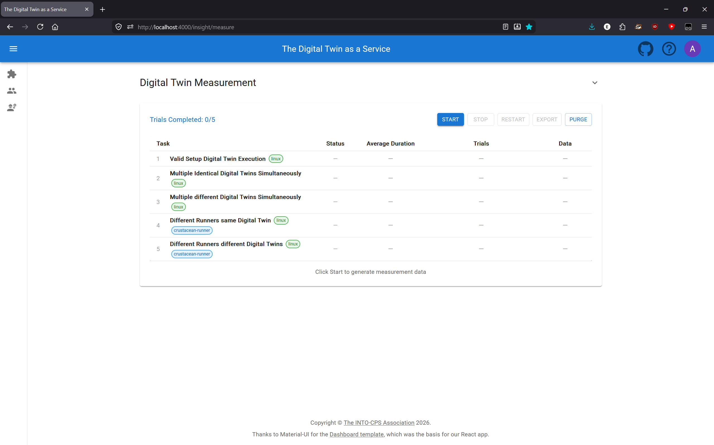
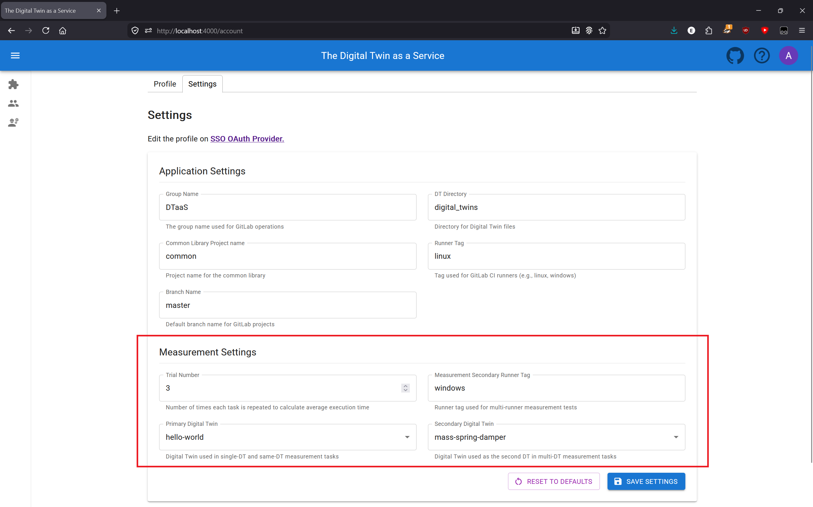

Performance Measurement
The DTaaS provides a built-in performance measurement tool that allows developers to measure the execution time of Digital Twin features. This is useful for understanding performance characteristics and establishing baselines for future optimization.
Accessing the Measurement Page
Navigate to http://localhost:4000/insight/measure or https://intocps.org/insight/measure
to access the measurement page. This page is only accessible to authenticated users.

Features
Measurement Tasks
The measurement suite includes the following tasks that measure different aspects of Digital Twin execution:
| Task | Description |
|---|---|
| Valid Setup Digital Twin Execution | Runs the primary Digital Twin with current setup |
| Multiple Identical Digital Twins Simultaneously | Runs the primary Digital Twin twice at once |
| Multiple different Digital Twins Simultaneously | Runs the primary and secondary Digital Twins at once |
| Different Runners same Digital Twin | Runs the primary Digital Twin twice with 2 different runners |
| Different Runners different Digital Twins | Runs the primary and secondary Digital Twins with 2 different runners |
By default, the primary Digital Twin is hello-world and the secondary
is mass-spring-damper. Both can be changed in the measurement settings.

Configuration Options
Configuration is managed in the Measurement Settings section of the account settings page.
- Trial Number: Number of times each task is repeated to calculate average execution time (default: 3). Adjust this for more or fewer data points.
- Measurement Secondary Runner Tag: The runner tag used for multi-runner measurement tests. The primary runner tag is configured separately in the account settings.
- Primary Digital Twin Name: The Digital Twin used in single-DT and
same-DT measurement tasks (default:
hello-world). - Secondary Digital Twin Name: The Digital Twin used as the second DT
in multi-DT measurement tasks (default:
mass-spring-damper).
Note: the Primary and Secondary Digital Twin dropdowns need to load the available Digital Twins the first time the settings page is visited in a session. They will appear disabled until loading completes.

Controls
- Start: Begin the measurement suite from the first task
- Stop: Cancel all running executions (shows confirmation dialog)
- Restart: Discard all current results and start fresh (shows confirmation dialog)
- Export: Download all measurement results as a JSON file (available when results exist)
- Purge: Clear all stored measurement data from the database
Understanding Results
Status Values
| Status | Meaning |
|---|---|
| PENDING | Task has not started yet |
| RUNNING | Task is currently executing |
| SUCCESS | All trials completed successfully |
| FAILURE | One or more trials failed |
| STOPPED | Task was interrupted by user |
Metrics
- Average Duration: Mean execution time across all trials for each task
- Total Time: Overall time for the complete measurement suite (shown after completion)
Measurement Table Columns
The measurement results table displays the following columns:
| Column | Description |
|---|---|
| Task | Task number, name, and description |
| Status | Current execution status (NOT_STARTED, PENDING, RUNNING, SUCCESS, FAILURE, or STOPPED) |
| Average Duration | Mean execution time across all completed trials, displayed in seconds |
| Trials | Visual cards showing each trial's execution details and status. Each trial represents one iteration of the task |
| Data | Download button to export individual task results as JSON |
Each row can be clicked to expand it and show a toggle alongside the task description. Disabling a task skips it during execution.
Data Storage
Measurement data is stored separately from regular execution history in the browser's IndexedDB. This enables the following:
- Keep measurements separate from normal DT execution logs
- Purge measurement data without affecting execution history
- Download results as JSON for further analysis
Downloading Results
Per-Task Download
After a task completes successfully, click "Download Task Results" in the Data column to export that specific task's measurements as JSON.
Full Results Download
Use the Export button in the controls toolbar to download all measurement results as JSON. This button is available whenever results exist.
Both options shown below, from a completed measurement run.

JSON Format
The exported JSON contains detailed information about each task and its
trials. Each trial represents one iteration of a task, and contains an
executions array with the pipeline execution details. The configuration
is shared at the task level, while each execution includes its runner tag.
The exported JSON follows the structure below:
Timing Behaviour
The measurement system uses deliberate delays of 750ms to avoid overloading the GitLab instance with simultaneous requests:
- Between trials: A 750ms delay is applied before each trial except the first. Trial 0 starts immediately; trials 1, 2, … each wait 750ms after the previous trial completes.
- Between executions within a trial: When a task runs multiple Digital Twins (e.g. "Multiple different Digital Twins Simultaneously"), each execution is staggered by 750ms. The first execution starts immediately, the second after 750ms, the third after 1500ms, and so on.
When interpreting the Average Duration of a task, keep in mind that the stagger delay between executions is included in the measured time. The delay between trials is not included, since each trial's timer starts after its delay.
Best Practices
- Run measurements during low-usage periods to get consistent results
- Use multiple iterations (3-5) for more reliable averages
- Ensure runners are available before starting the measurement
- Navigating away from the measurement page while it is running is permitted — execution continues in the background. However, changing the URL, refreshing, or closing the tab will stop the measurement. Notifications indicate when the measurement completes or is stopped.
Troubleshooting
| Issue | Solution |
|---|---|
| Task appears stuck, old pipelines appears | Reauthenticate the app by refreshing the tab |
| Tasks time out | Verify runners are online, uses the tag and are accessible |